Exploratory Analyses of PK and PK/PD Data
Source:vignettes/articles/eda-pk-pkpd-workflow.Rmd
eda-pk-pkpd-workflow.RmdThis vignette will demonstrate pmxhelpr functions for
exploratory data analysis of dose-concentration-time data to inform
population PK modeling analysis. This includes package functions to
visualize concentration-time data and to assess dose-proportionality of
exposure.
options(scipen = 999, rmarkdown.html_vignette.check_title = FALSE)
library(pmxhelpr)
library(dplyr, warn.conflicts = FALSE)
library(ggplot2, warn.conflicts = FALSE)
library(Hmisc, warn.conflicts = FALSE)
library(patchwork, warn.conflicts = FALSE)Data
The example dataset used in this vignette is based on a single ascending dose (SAD) study of an orally administered drug product with a parallel group food effect (FE) cohort.
data_sad
Dataset definitions can be viewed by calling ?data_sad.
A quick summary of variables and types is printed below.
glimpse(data_sad)
#> Rows: 1,404
#> Columns: 25
#> $ ID <dbl> 1, 1, 1, 1, 1, 1, 1, 1, 1, 1, 1, 1, 1, 1, 1, 1, 1, 1, 1, 1, 1,…
#> $ TIME <dbl> 0.00, 0.00, 0.00, 0.48, 0.48, 0.81, 0.81, 1.49, 1.49, 2.11, 2.…
#> $ NTIME <dbl> 0.0, 0.0, 0.0, 0.5, 0.5, 1.0, 1.0, 1.5, 1.5, 2.0, 2.0, 3.0, 3.…
#> $ NDAY <dbl> 1, 1, 1, 1, 1, 1, 1, 1, 1, 1, 1, 1, 1, 1, 1, 1, 1, 1, 1, 1, 1,…
#> $ DOSE <dbl> 10, 10, 10, 10, 10, 10, 10, 10, 10, 10, 10, 10, 10, 10, 10, 10…
#> $ AMT <dbl> 10, NA, NA, NA, NA, NA, NA, NA, NA, NA, NA, NA, NA, NA, NA, NA…
#> $ EVID <dbl> 1, 0, 0, 0, 0, 0, 0, 0, 0, 0, 0, 0, 0, 0, 0, 0, 0, 0, 0, 0, 0,…
#> $ ODV <dbl> NA, NA, 100.00000, NA, 99.87700, 2.02000, 99.44932, 4.02000, 9…
#> $ LDV <dbl> NA, NA, 100.00000, NA, 99.87700, 0.70310, 99.44932, 1.39130, 9…
#> $ CFB <dbl> NA, NA, 0.0000000, NA, -0.1229974, NA, -0.5506789, NA, -2.3928…
#> $ CONC <dbl> NA, NA, 0.00, NA, 0.00, NA, 2.02, NA, 4.02, NA, 3.50, NA, 7.18…
#> $ LINE <dbl> 2, 1, 1, 3, 3, 4, 4, 5, 5, 6, 6, 7, 7, 8, 8, 9, 9, 10, 10, 11,…
#> $ CMT <dbl> 1, 2, 3, 2, 3, 2, 3, 2, 3, 2, 3, 2, 3, 2, 3, 2, 3, 2, 3, 2, 3,…
#> $ MDV <dbl> NA, 1, 1, 1, 1, 0, 0, 0, 0, 0, 0, 0, 0, 0, 0, 0, 0, 0, 0, 0, 0…
#> $ BLQ <dbl> NA, -1, -1, 1, 1, 0, 0, 0, 0, 0, 0, 0, 0, 0, 0, 0, 0, 0, 0, 0,…
#> $ LLOQ <dbl> NA, 1, 1, 1, 1, 1, 1, 1, 1, 1, 1, 1, 1, 1, 1, 1, 1, 1, 1, 1, 1…
#> $ FOOD <dbl> 0, 0, 0, 0, 0, 0, 0, 0, 0, 0, 0, 0, 0, 0, 0, 0, 0, 0, 0, 0, 0,…
#> $ SEXF <dbl> 1, 1, 1, 1, 1, 1, 1, 1, 1, 1, 1, 1, 1, 1, 1, 1, 1, 1, 1, 1, 1,…
#> $ RACE <dbl> 2, 2, 2, 2, 2, 2, 2, 2, 2, 2, 2, 2, 2, 2, 2, 2, 2, 2, 2, 2, 2,…
#> $ AGEBL <int> 25, 25, 25, 25, 25, 25, 25, 25, 25, 25, 25, 25, 25, 25, 25, 25…
#> $ WTBL <dbl> 82.1, 82.1, 82.1, 82.1, 82.1, 82.1, 82.1, 82.1, 82.1, 82.1, 82…
#> $ SCRBL <dbl> 0.87, 0.87, 0.87, 0.87, 0.87, 0.87, 0.87, 0.87, 0.87, 0.87, 0.…
#> $ CRCLBL <dbl> 128, 128, 128, 128, 128, 128, 128, 128, 128, 128, 128, 128, 12…
#> $ USUBJID <chr> "STUDYNUM-SITENUM-1", "STUDYNUM-SITENUM-1", "STUDYNUM-SITENUM-…
#> $ PART <chr> "Part 1-SAD", "Part 1-SAD", "Part 1-SAD", "Part 1-SAD", "Part …The study design consists of two parts.
- Part 1 was a sequential single ascending dose study covering a 10 to 400 mg dose range.
- Part 2 was a parallel 100 mg single dose food effect (FE) study.
distinct(data_sad, DOSE, PART, FOOD)
#> # A tibble: 6 × 3
#> DOSE PART FOOD
#> <dbl> <chr> <dbl>
#> 1 10 Part 1-SAD 0
#> 2 50 Part 1-SAD 0
#> 3 100 Part 1-SAD 0
#> 4 100 Part 2-FE 1
#> 5 200 Part 1-SAD 0
#> 6 400 Part 1-SAD 0The dataset is formatted for population pharmacokinetic (PopPK) and pharmacokinetic/pharmacodynamic (PK/PD) modeling in NONMEM with the following compartments and data types:
-
CMT=1: oral dose events (EVID=1) -
CMT=2: drug concentration observations (EVID=0) -
CMT=3: pharmacodynamic response observations (EVID=0)
Dose events are input based on AMT. The nominal
(e.g. protocol assigned) dose associated with each observation is
captured in DOSE.
Plasma drug concentration and pharmacodynamic response observations
are expressed in multiple units:
- ODV: original units of the dependent variable
[CMT=2 ng/mL, CMT=3 % baseline activity] -
LDV: log-transformed drug concentration
[CMT = 2 log(ng/mL), CMT = 3 % baseline
activity] - CFB: percentage change from baseline
[CMT=2 missing, CMT=3 % change from
baseline]
Time is expressed as actual time of dose input or observation and nominal time of observations:
-
TIME: Actual time since first dose administration [hours] -
NTIME: Nominal time dose event or sample collection per protocol [hours] -
NDAY: Nominal day on study [day]
The nominal time variables are exact binning variables, which are useful for grouping data for exploratory data analysis or model evaluation.
var_addn
Now let’s pre-process these data for visualization. Often, it is
useful to assign study design variables to the color aesthetic in plots
to visualize data stratified by these study design elements. One way to
extract even more information from the plots is to include the sample
size within each level of the variable mapped to the color aesthetic.
pmxhelpr provides a useful vectorized helper function for
this purpose: var_addn()
The helper function var_addn() takes two vector
variables as arguments: a grouping variable (grp_var) and
an identifier variable (id_var). The function counts unique
values of id_var per level of grp_var and
returns a factor vector with group labels appended with counts of unique
identifiers. It can be used inside mutate() to transform
columns in place.
A string constant separator can be added between the values in
grp_var and the count of id_var using the
optional sep argument. A common use is to specify the dose
units when linking dose and count of unique individuals assigned to that
dose level.
Let’s define some new variables and count unique subjects in each for use in plotting. Useful study design variables for stratifying plots include: dose (DOSE), food status (FOOD), and their interaction.
plot_data <- data_sad %>%
filter(EVID == 0) %>%
mutate(`Food Status` = ifelse(FOOD == 0, "Fasted", "Fed"),
`Dose and Food` = paste(DOSE, "mg", `Food Status`)) %>%
mutate(Dose = var_addn(DOSE, ID, sep = "mg"),
`Food Status` = var_addn(`Food Status`, ID),
`Dose and Food` = var_addn(`Dose and Food`, ID))
unique(plot_data$Dose)
#> [1] 10 mg (n=6) 50 mg (n=6) 100 mg (n=12) 200 mg (n=6) 400 mg (n=6)
#> Levels: 10 mg (n=6) 50 mg (n=6) 100 mg (n=12) 200 mg (n=6) 400 mg (n=6)
unique(plot_data$`Food Status`)
#> [1] Fasted (n=30) Fed (n=6)
#> Levels: Fasted (n=30) Fed (n=6)
unique(plot_data$`Dose and Food`)
#> [1] 10 mg Fasted (n=6) 50 mg Fasted (n=6) 100 mg Fasted (n=6)
#> [4] 100 mg Fed (n=6) 200 mg Fasted (n=6) 400 mg Fasted (n=6)
#> 6 Levels: 10 mg Fasted (n=6) 50 mg Fasted (n=6) ... 400 mg Fasted (n=6)var_addn() preserves the order in which values first
appear in grp_var, so a numerically-sorted input dataset
yields factor levels in numeric order without further reordering. If a
custom order is needed, forcats::fct_relevel() can be
applied afterward.
Finally, let’s filter down only to PK observations for this exploratory analysis, which is focused on assessing the informational content of the data and trends for population PK analysis.
Population Concentration-time Plots with
plot_dvtime()
Overview
pmxhelpr includes a function for common visualizations
of observed concentration-time data in exploratory data analysis:
plot_dvtime()
Let’s try passing in our PK dataset with no other arguments.
plot_dvtime(plot_data_pk)
#> Error in `check_varsindf()`:
#> ! argument `dv_var` must be variable(s) in `data` (not found: 'DV').
#> Available columns: ID, TIME, NTIME, NDAY, DOSE, AMT, EVID, ODV, LDV, CFB, CONC, LINE, CMT, MDV, BLQ, LLOQ, FOOD, SEXF, RACE, AGEBL, WTBL, SCRBL, CRCLBL, USUBJID, PART, Food Status, Dose and Food, DoseThe function with no arguments other than the input dataset returns an error with a helpful error message letting us know the additional argument required to be specified.
Specifying Dependent and Independent Variables
plot_dvtime() has 3 arguments that specify the dependent
variable to be mapped to the y-axis:
-
dv_var= DV (default), the dependent variable to be mapped to the y-axis -
time_var= TIME (default), the independent variable to be mapped to the x-axis -
ntime_var= NTIME (default), the exact bin version of the x-axis variable for calculation of summary statistics
These arguments all support non-standard evaluation and these
arguments may be passed as bare names or strings. Since
data_sad has the dependent variable mapped to the name
ODV, this name must be passed to the function.
plot_dvtime(plot_data_pk, dv_var = ODV)
Now the function returns a plot! Conveniently, the time variables in
data_sad had names aligned with the default arguments and
did not have to be specified as arguments; however, this may not always
be the case.
The same variable name can be passed to both time_var
and ntime_var arguments for the special case where only
nominal times are known.
plot_dvtime(plot_data_pk, dv_var = ODV, time_var = NTIME, ntime_var = NTIME)
Suppressing the Caption
A caption prints by default describing the plot elements. The caption
can be suppressed by specifying show_caption = FALSE.
plot_dvtime(data = plot_data_pk, dv_var = ODV, show_caption = FALSE) 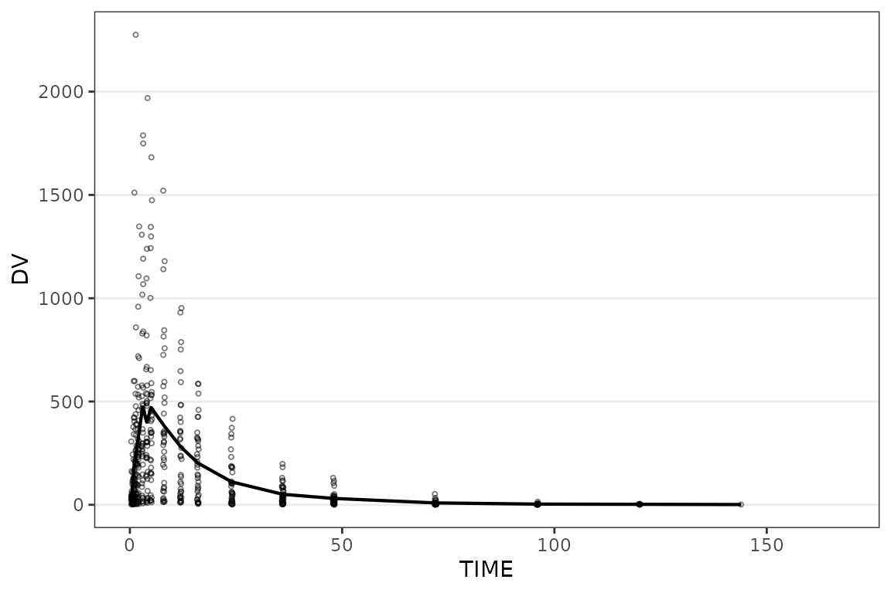
Setting Axis Scales, Breaks, and Labels
plot_dvtime() includes one argument
(log_y), which performs a log10 transformation of the
y-axis with some additional formatting benefits over manually adding the
layer to the returned object with scale_y_log10().
- Includes log tick marks on the y-axis
- Updates the caption with the correct central tendency measure if
show_captions = TRUE.
plot_dvtime() uses the stat_summary()
function from ggplot2 to calculate and plot the central
tendency measures and error bars. An often overlooked feature of
stat_summary(), is that it calculates the summary
statistics after any transformations to the data performed by
changing the scales. This means that when scale_y_log10()
is applied to the plot, the data are log-transformed for plotting and
the central tendency measure returned when requesting
"mean" from stat_summary() is the
geometric mean. If the log_y argument is used to
generate semi-log plots along with show_captions = TRUE,
then the caption will delineate where arithmetic and geometric means are
being returned.
plot_dvtime(data = plot_data_pk, dv_var = ODV, log_y = TRUE) 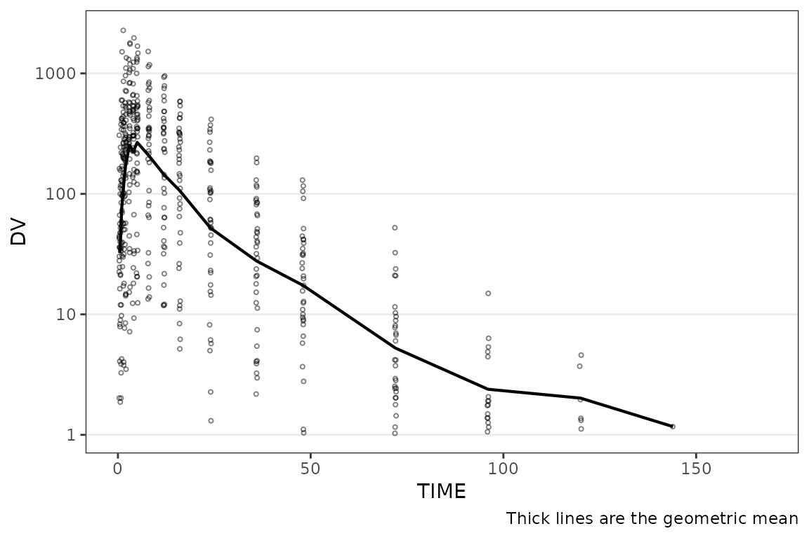
The x-axis breaks and axis labels can always be customized by adding
scale_x_continuous() and/or labs() layers to
the returned ggplot object. The default for ggplot is to
break the x-axis in units divisible by 5, which do not often map well to
time units and should routinely be overwritten.
plot_dvtime(data = plot_data_pk, dv_var = ODV, log_y = TRUE) +
scale_x_continuous(breaks = seq(0, 168, 24)) +
labs(y = "Concentration (ng/mL)", x = "Time Since First Dose (hours)")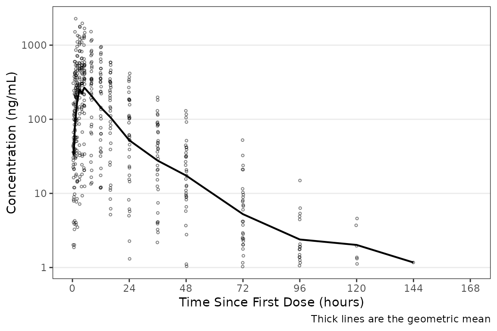
Specifying the Color Aesthetic
The color aesthetic can be mapped to a dataset variable using the
col_var argument. This argument uses non-standard
evaluation and can be passed as a bare column name or as a string.
This can be demonstrated using the Dose and Food
variable we defined earlier with sample size counts using
var_addn().
plot_dvtime(data = plot_data_pk, dv_var = ODV, log_y = TRUE,
col_var = `Dose and Food`) +
scale_x_continuous(breaks = seq(0, 168, 24)) +
labs(y = "Concentration (ng/mL)", x = "Time Since First Dose (hours)")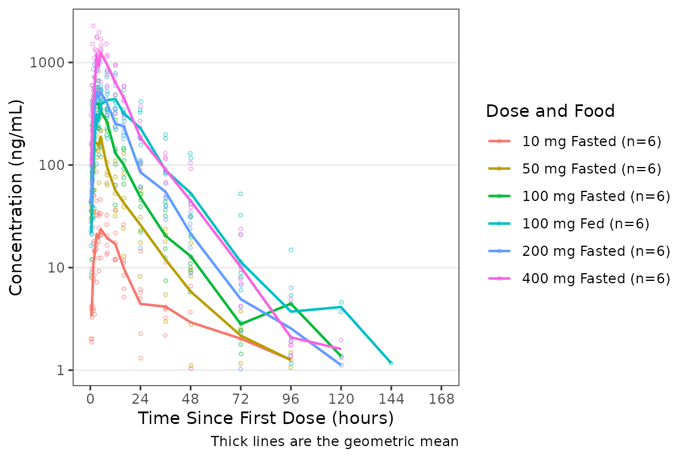
Specifying the Central Tendency
The argument cent specifies the method of calculating
the central tendency (+/- variability) within levels of the variable
passed to the col_var. The default is
cent = "mean"; however, note that the calculation is
performed after any transformations to the data and this option
will return the geometric mean when log_y=TRUE.
If the log_y argument is used to generate semi-log plots
along with show_captions = TRUE, then the caption will
automatically delineate where arithmetic and geometric means are being
returned.
plot_dvtime(data = plot_data_pk, dv_var = ODV, col_var = `Dose and Food`, cent = "mean") +
scale_x_continuous(breaks = seq(0, 168, 24)) +
labs(y = "Concentration (ng/mL)", x = "Time Since First Dose (hours)")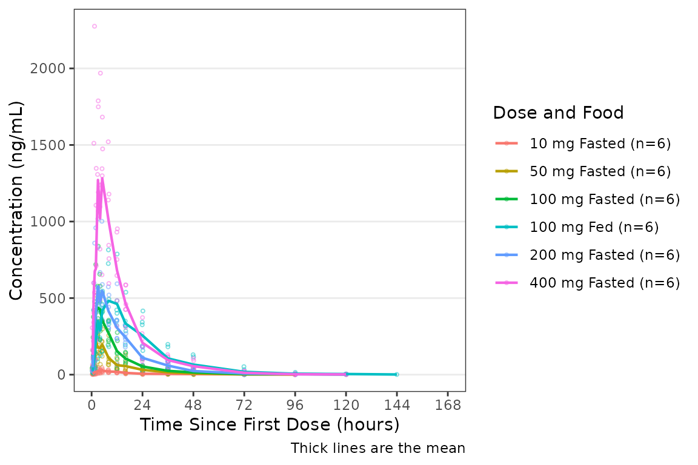
plot_dvtime() returns a ggplot object which
we can be further modified using native ggplot functions.
Therefore, we can facet by PART by simply adding in another layer to our
ggplot object.
plot_dvtime(data = plot_data_pk, dv_var = ODV, col_var = `Dose and Food`, cent = "mean",
log_y = TRUE) +
scale_x_continuous(breaks = seq(0, 168, 24)) +
labs(y = "Concentration (ng/mL)", x = "Time Since First Dose (hours)") +
facet_wrap(~PART)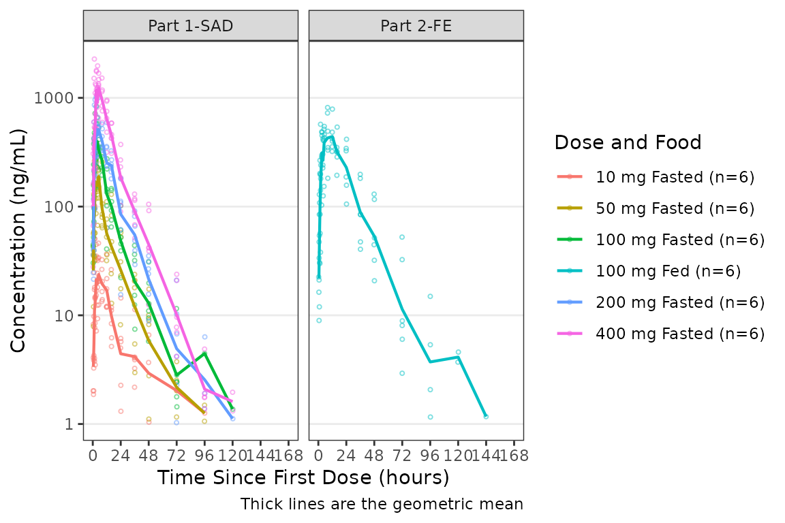
The plot can be simplified to show mean +/- standard deviation by
specifying cent = "mean_sdl". The observed points just add
noise when combined with error bars and can be hidden by setting
obs_point = pmx_point(alpha = 0) in the theme.
plot_dvtime(data = plot_data_pk, dv_var = ODV, col_var = `Dose and Food`,
cent = "mean_sdl",log_y = TRUE,
theme = plot_dvtime_theme(obs_point = pmx_point(alpha = 0))) +
scale_x_continuous(breaks = seq(0, 168, 24)) +
labs(y = "Concentration (ng/mL)", x = "Time Since First Dose (hours)") +
facet_wrap(~PART)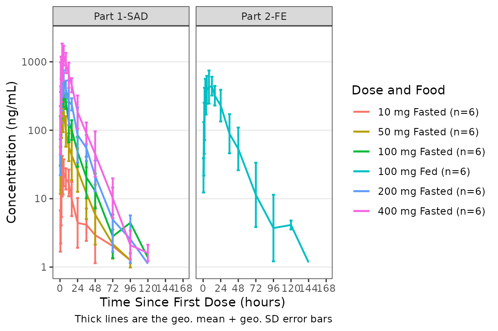
For data with high variability visualized on a linear y-axis, the
error bars may drop below zero. In this case, the upper error bar only
may be requested by specifying cent = "mean_sdl_upper".
plot_dvtime(data = plot_data_pk, dv_var = ODV, col_var = `Dose and Food`,
cent = "mean_sdl_upper",
theme = plot_dvtime_theme(obs_point = pmx_point(alpha = 0))) +
scale_x_continuous(breaks = seq(0, 168, 24)) +
labs(y = "Concentration (ng/mL)", x = "Time Since First Dose (hours)") +
facet_wrap(~PART)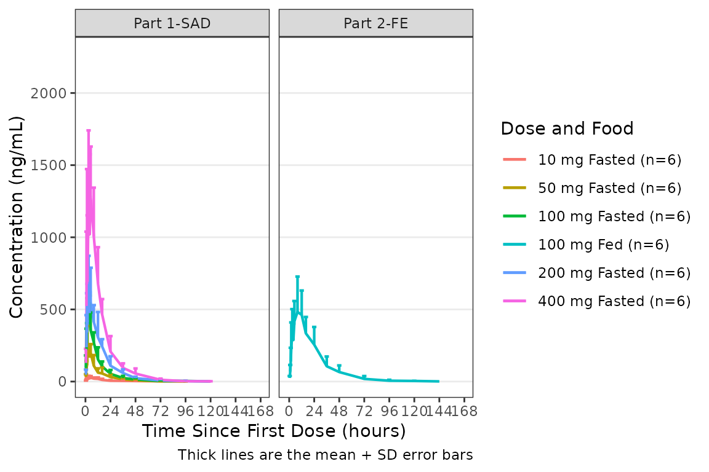
For small samples or non-normally (or log-normally) distributed data,
the median and inter-quartile range (IQR) error bars may be requested by
specifying cent = "median_iqr".
plot_dvtime(data = plot_data_pk, dv_var = ODV, col_var = `Dose and Food`,
cent = "median_iqr",log_y = TRUE,
theme = plot_dvtime_theme(obs_point = pmx_point(alpha = 0))) +
scale_x_continuous(breaks = seq(0, 168, 24)) +
labs(y = "Concentration (ng/mL)", x = "Time Since First Dose (hours)") +
facet_wrap(~PART)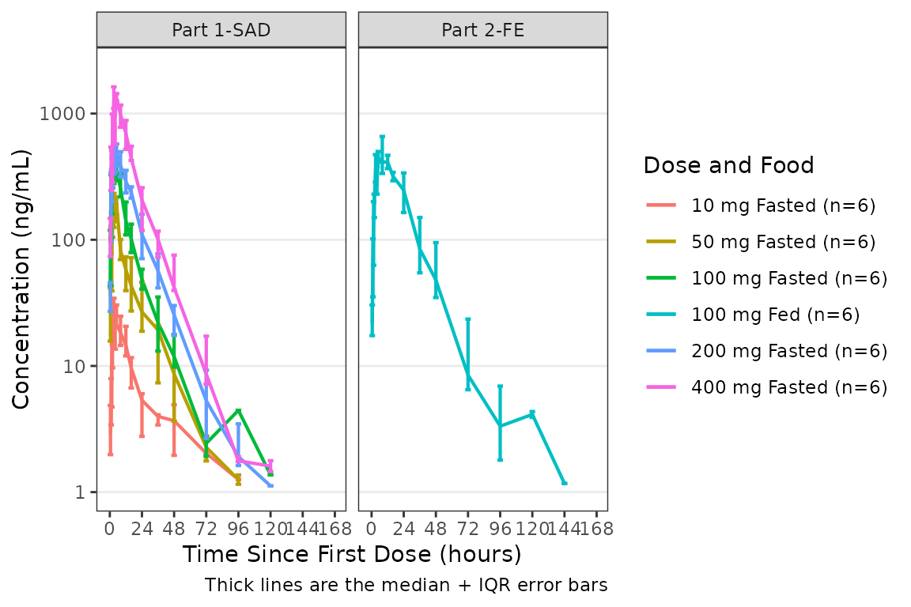
Connecting Repeated Measures at the Individual Level
Data points may be connected longitudinally within an individual by
specifying id_var (e.g., id_var = ID). The
grouping variable inherits the variable mapped to the color aesthetic
with col_var. The central tendency may be removed by
specifying cent ="none" or the median may be plotted by
specifying cent="median".
This argument supports non-standard evaluation, and may be passed as bare names or strings.
plot_dvtime(data = plot_data_pk, dv_var = ODV, col_var = `Dose and Food`, cent = "median",
log_y = TRUE,id_var = ID) +
scale_x_continuous(breaks = seq(0, 168, 24)) +
labs(y = "Concentration (ng/mL)", x = "Time Since First Dose (hours)") +
facet_wrap(~PART)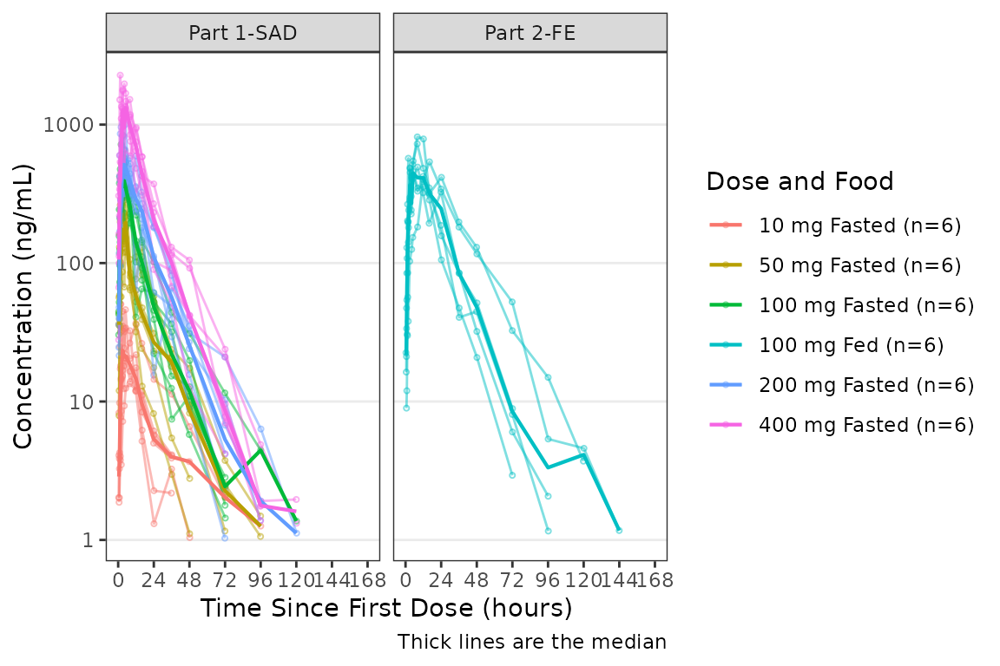
Handling of BLQ Data
plot_dvtime() includes functionality to automatically
handle imputation of PK data censored due to assay limitations. This
requires specification of two arguments: loq and
loq_method.
The loq_method argument specifies how BLQ imputation
should be performed. Options are:
-
0or"none": No handling. Plot input datasetDVvsTIMEas is. (default) -
1or"postdose": Impute all BLQ data atTIME<= 0 to 0 and all BLQ data atTIME> 0 to 1/2 xloq. Useful for plotting concentration-time data with some data BLQ on a linear scale -
2or"all": Impute all BLQ data to 1/2 xloq. Useful for plotting concentration-time data with some data BLQ on a log scale
The loq argument specifies the numeric value of the
LLOQ. The loq argument must be specified when
loq_method is non-zero, but can be NULL
if the variable LLOQ is present in the dataset and
the value of loq will be inherited from the data.
plot_dvtime(plot_data_pk, dv_var = ODV, col_var = `Dose and Food`,
cent = "mean",log_y = TRUE,loq_method = "all") +
scale_x_continuous(breaks = seq(0, 168, 24)) +
labs(y = "Concentration (ng/mL)", x = "Time Since First Dose (hours)") +
facet_wrap(~PART)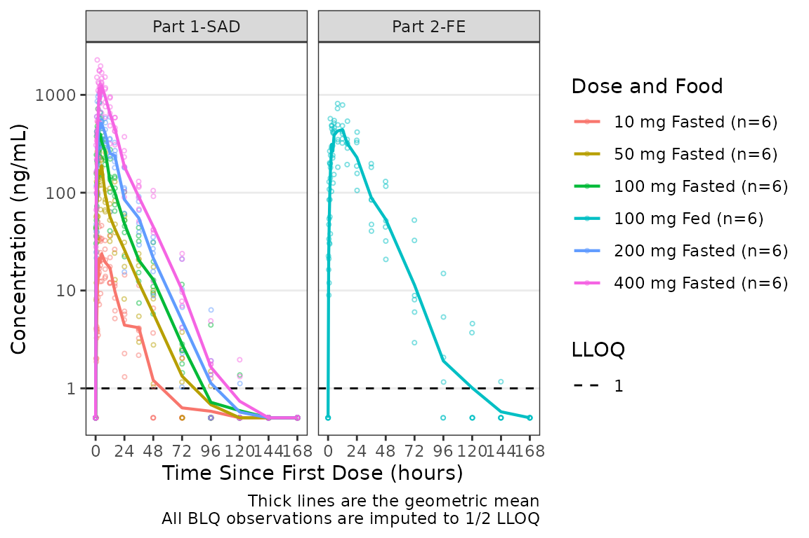
The same plot is obtained by specifying loq_method = 2
and loq = 1
plot_dvtime(plot_data_pk, dv_var = ODV, col_var = `Dose and Food`,
cent = "mean", log_y = TRUE,loq_method = 2, loq = 1) +
scale_x_continuous(breaks = seq(0, 168, 24)) +
labs(y = "Concentration (ng/mL)", x = "Time Since First Dose (hours)") +
facet_wrap(~PART)
A reference line is drawn to denote the LLOQ and all observations
with EVID=0 and MDV=1 are imputed as LLOQ/2.
The numeric value of LLOQ is printed in the legend and a caption is
added to indicate the imputation method for BLQ data.
Applying Dose-normalization
plot_dvtime() also has functionality to generate
dose-normalized concentration-time plots by specifying
dosenorm = TRUE.
plot_dvtime(plot_data_pk, dv_var = ODV, col_var = `Dose and Food`, cent = "mean",
log_y = TRUE,
dosenorm = TRUE) +
scale_x_continuous(breaks = seq(0, 168, 24)) +
labs(y = "Dose-normalized Conc. (ng/mL/mg)", x = "Time Since First Dose (hours)") +
facet_wrap(~PART)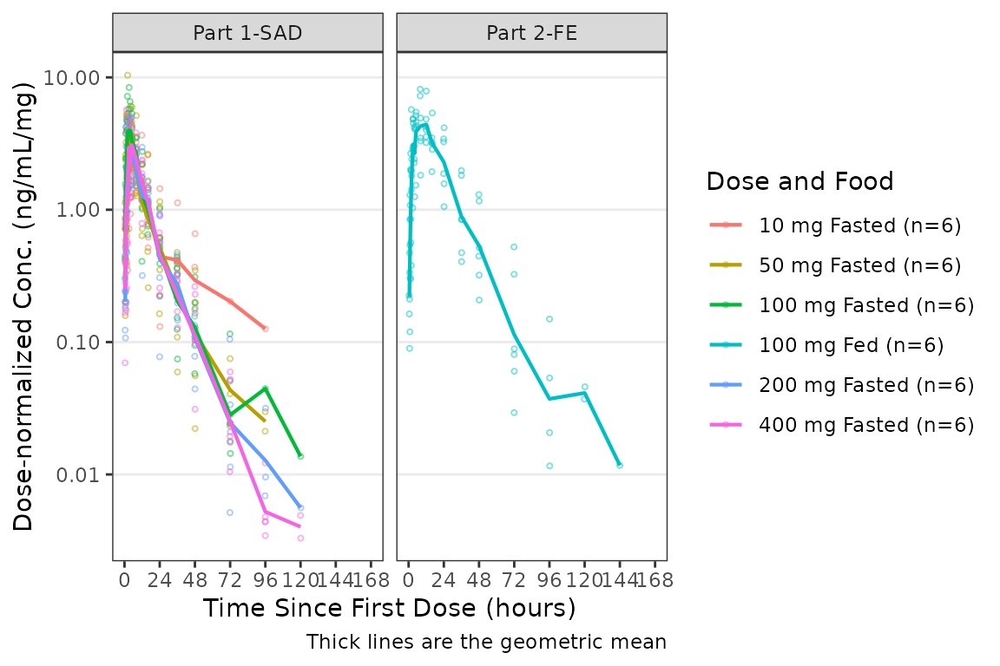
When dosenorm = TRUE, the variable specified in
dose_var (default = DOSE) needs to be present in the input
dataset data. If dose_var is not present in
data, the function will return an Error with an
informative error message. This argument uses non-standard evaluation
and can be passed as a bare column name or as a string.
plot_dvtime(select(plot_data_pk, -DOSE),
dv_var = ODV, col_var = `Dose and Food`,
cent = "mean", log_y = TRUE,dosenorm = TRUE) +
labs(y = "Dose-normalized Conc. (ng/mL/mg)", x = "Time Since First Dose (hours)") +
facet_wrap(~PART)
#> Error in `check_varsindf()`:
#> ! argument `dose_var` must be variable(s) in `data` (not found: 'DOSE').
#> Available columns: ID, TIME, NTIME, NDAY, AMT, EVID, ODV, LDV, CFB, CONC, LINE, CMT, MDV, BLQ, LLOQ, FOOD, SEXF, RACE, AGEBL, WTBL, SCRBL, CRCLBL, USUBJID, PART, Food Status, Dose and Food, DoseDose-normalization is performed AFTER BLQ imputation in the case in which both options are requested. The reference line for the LLOQ will not be plotted when dose-normalized concentration is the dependent variable.
plot_dvtime(plot_data_pk, dv_var = ODV, col_var = `Dose and Food`, cent = "mean",
log_y = TRUE,
loq_method = 2, dosenorm = TRUE) +
labs(y = "Dose-normalized Conc. (ng/mL/mg)", x = "Time Since First Dose (hours)") +
facet_wrap(~PART)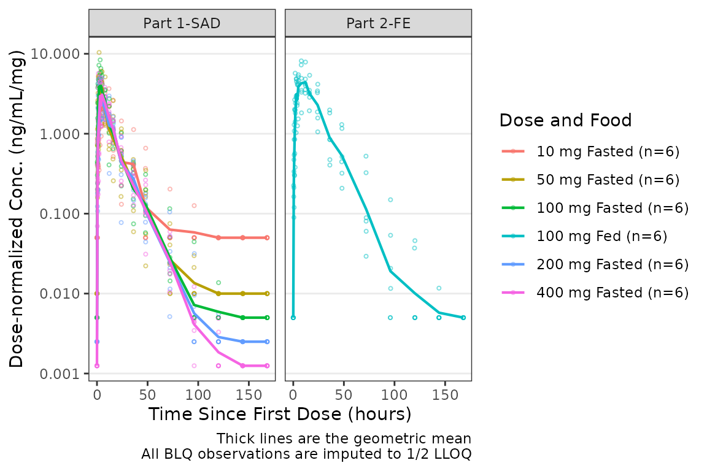
Adjusting the Plot Theme with plot_dvtime_theme()
The default aesthetics for Response-Time plots are controlled via
plot_dvtime_theme(). See the Plot Themes and Aesthetics vignette for
details on the theme system, element constructors, and examples of
customizing Response-Time aesthetics.
plot_dvtime_theme()
#> <plot_dvtime_theme>
#> obs_point <pmx_point>: shape = 1, size = 0.75, alpha = 0.5
#> obs_line <pmx_line>: linewidth = 0.5, linetype = 1, alpha = 0.5
#> cent_point <pmx_point>: shape = 16, size = 1.25, alpha = 0
#> cent_line <pmx_line>: linewidth = 0.75, linetype = 1, alpha = 1
#> cent_errorbar <pmx_errorbar>: linewidth = 0.75, linetype = 1, alpha = 1, width = NULL
#> ref_line <pmx_line>: linewidth = 0.5, linetype = 2, alpha = 1
#> loq_line <pmx_line>: linewidth = 0.5, linetype = 2, alpha = 1Say we want to update the errorbar cap width to be more visible in
our prior geometric mean +/- geometric SD plot with the interaction of
dose and food passed to the color aesthetic. This can be done by
defining a new theme and passing that to the theme argument
of plot_dvtime().
dvtime_new_theme <- plot_dvtime_theme(
obs_point = pmx_point(alpha = 0),
cent_errorbar = pmx_errorbar(width = 10)
)
plot_dvtime(data = plot_data_pk, dv_var = ODV, col_var = `Dose and Food`,
cent = "mean_sdl",log_y = TRUE,
theme = dvtime_new_theme) +
scale_x_continuous(breaks = seq(0, 168, 24)) +
labs(y = "Concentration (ng/mL)", x = "Time Since First Dose (hours)") +
facet_wrap(~PART)Individual Concentration-time plots with
plot_dvtime()
The previous section provides an overview of how to generate
population concentration-time profiles by dose using
plot_dvtime(); however, we can also use
plot_dvtime() to generate subject-level visualizations with
a little pre-processing of the input dataset.
We can specify cent = "none" to remove the central
tendency layer when plotting individual subject data.
plot_dvtime(plot_data_pk, dv_var = ODV, col_var = `Dose and Food`,
cent = "none",log_y = TRUE, id_var = ID,
loq_method = 2, loq = 1) +
labs(y = "Concentration (ng/mL)") +
facet_wrap(~PART)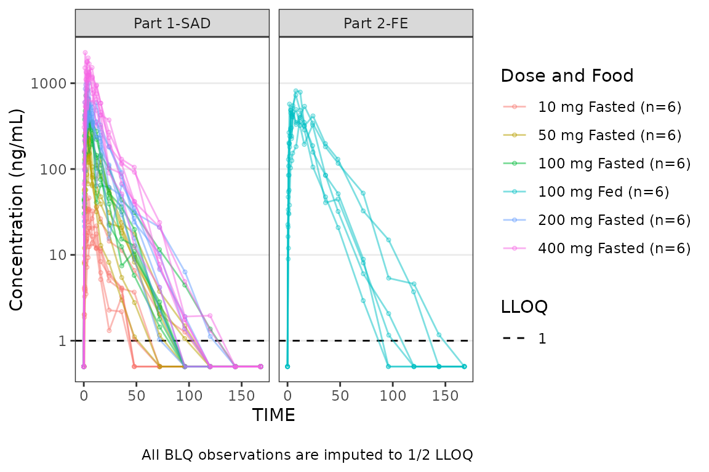
We can plot an individual subject by filtering the input dataset. This could be extended to generate plots for all individuals usingfor loops, lapply(), purrr::map()
functions, or other methods.
ids <- sort(unique(plot_data_pk$ID)) #vector of unique subject ids
n_ids <- length(ids) #count of unique subject ids
plots_per_pg <- 4
n_pgs <- ceiling(n_ids/plots_per_pg) #Total number of pages needed
plist<- list()
for(i in 1:n_ids){
plist[[i]] <- plot_dvtime(filter(plot_data_pk, ID == ids[i]),
dv_var = ODV, cent = "none",
log_y = TRUE,
id_var = ID,
loq_method = 2, loq = 1, show_caption = FALSE) +
labs(y = "Concentration (ng/mL)", x = "Time Since First Dose (hours)") +
facet_wrap(~PART)+
labs(title = paste0("ID = ", ids[i], " | Dose = ", unique(plot_data_pk$DOSE[plot_data_pk$ID==ids[i]]), " mg"))+
theme(legend.position="none")
}
lapply(1:n_pgs, function(n_pg) {
i <- (n_pg-1)*plots_per_pg+1
j <- n_pg*plots_per_pg
wrap_plots(plist[i:j])
})
#> [[1]]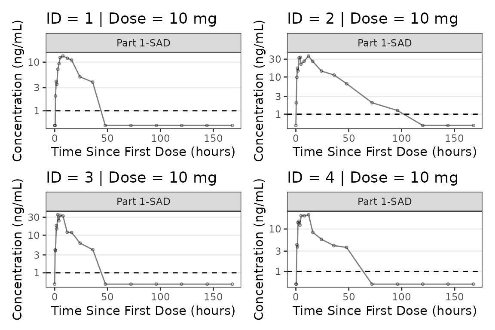
#>
#> [[2]]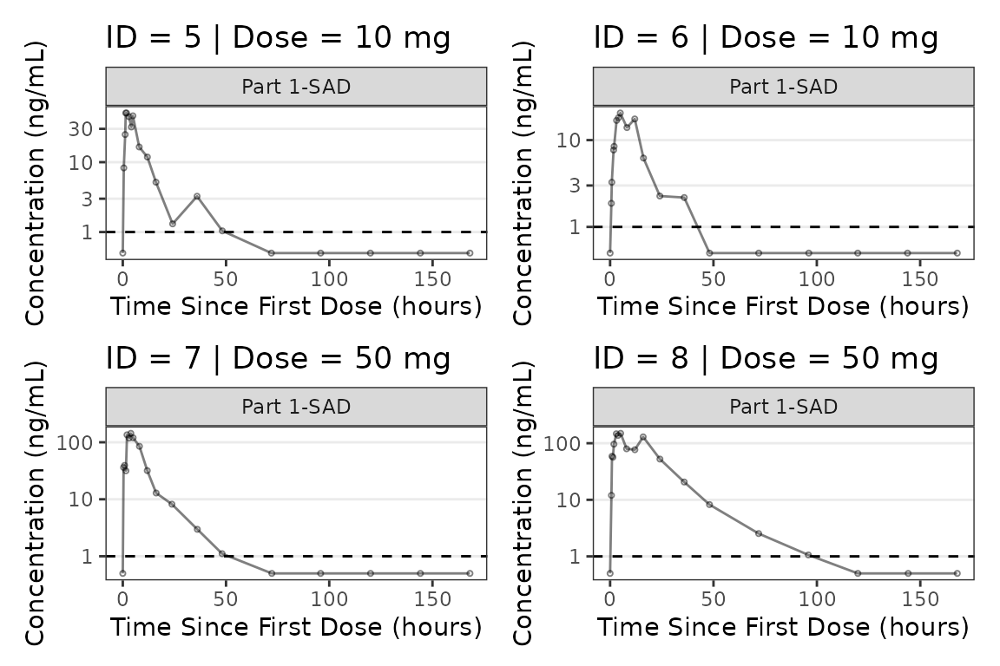
#>
#> [[3]]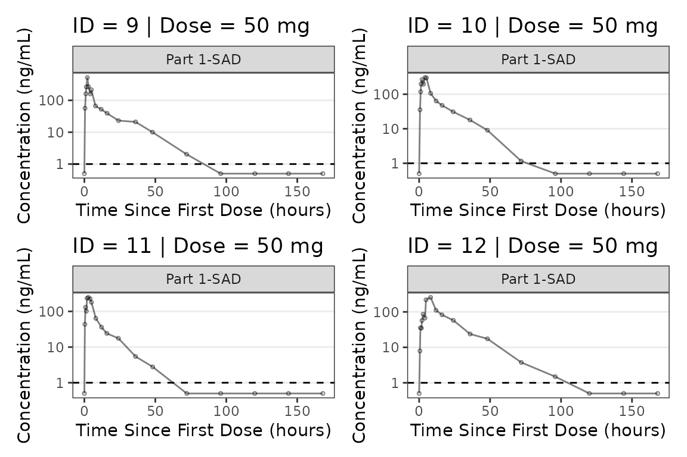
#>
#> [[4]]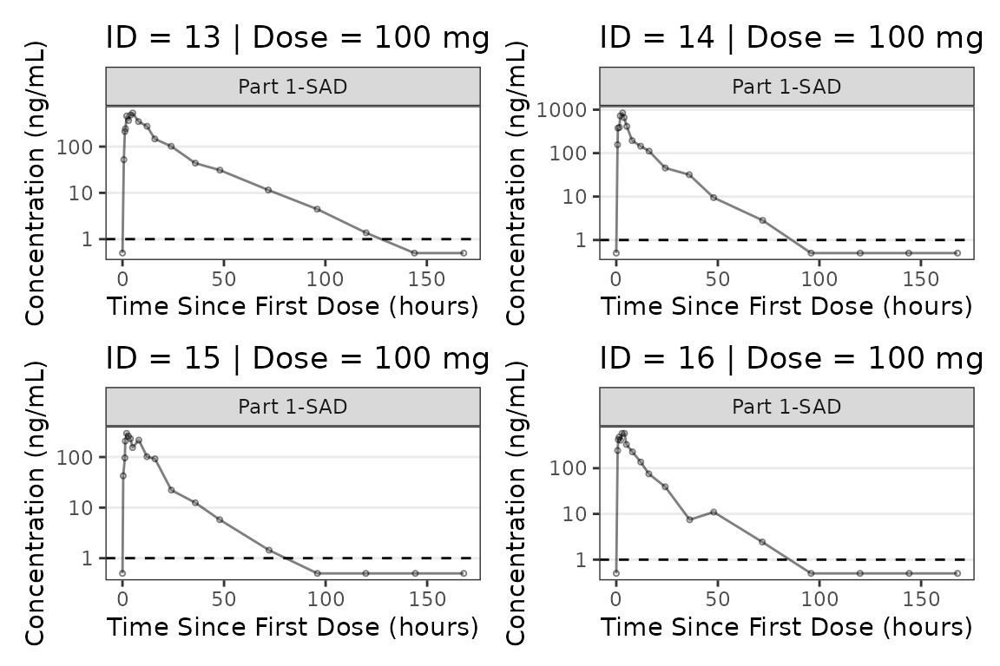
#>
#> [[5]]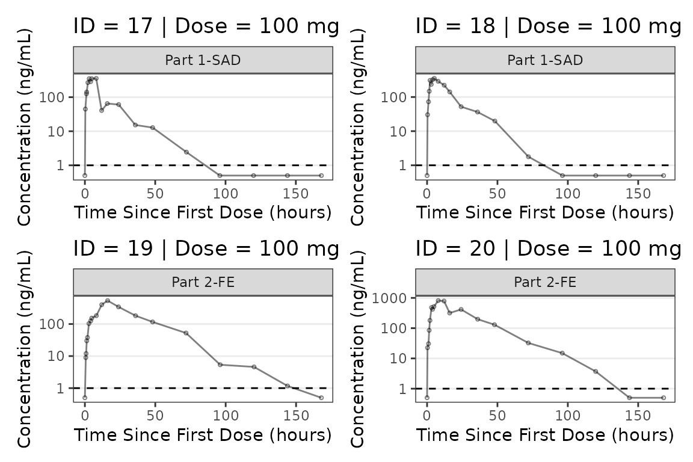
#>
#> [[6]]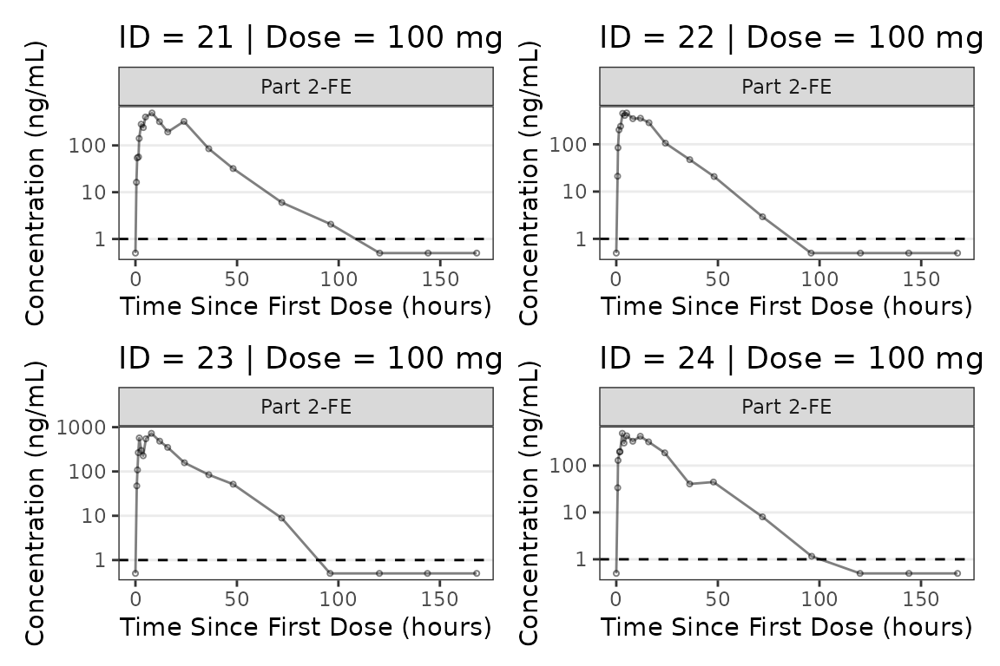
#>
#> [[7]]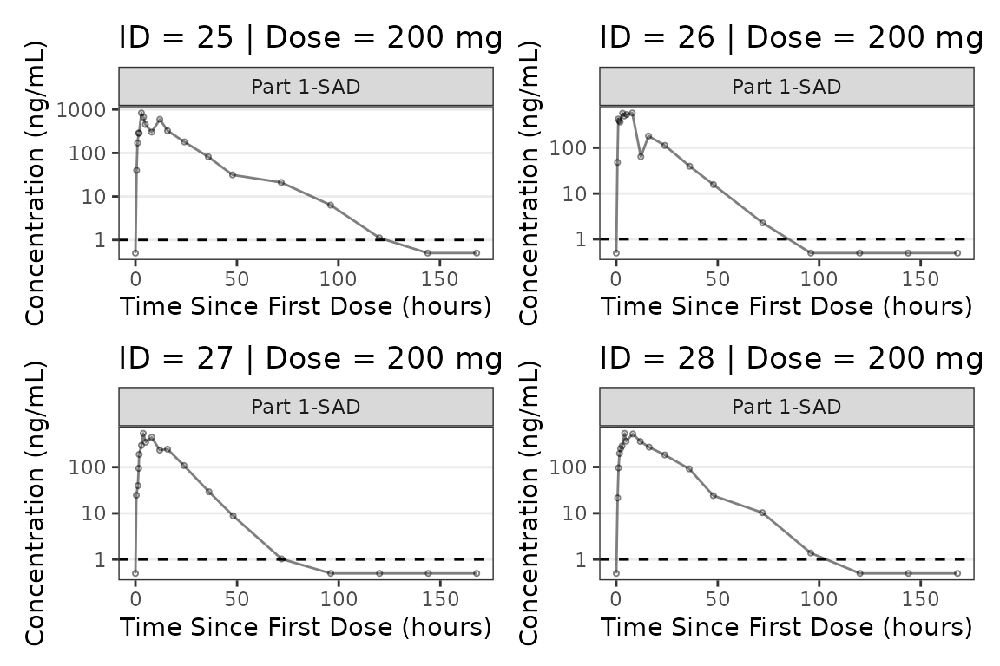
#>
#> [[8]]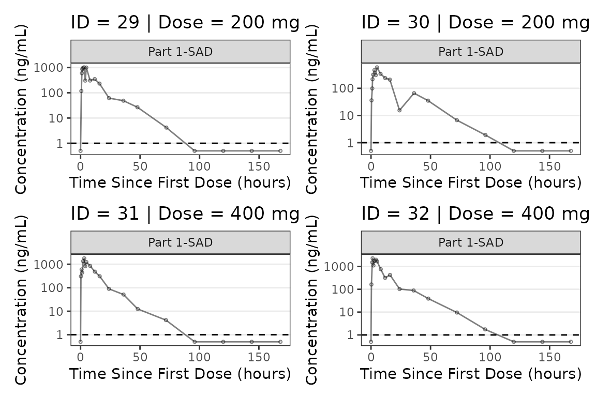
#>
#> [[9]]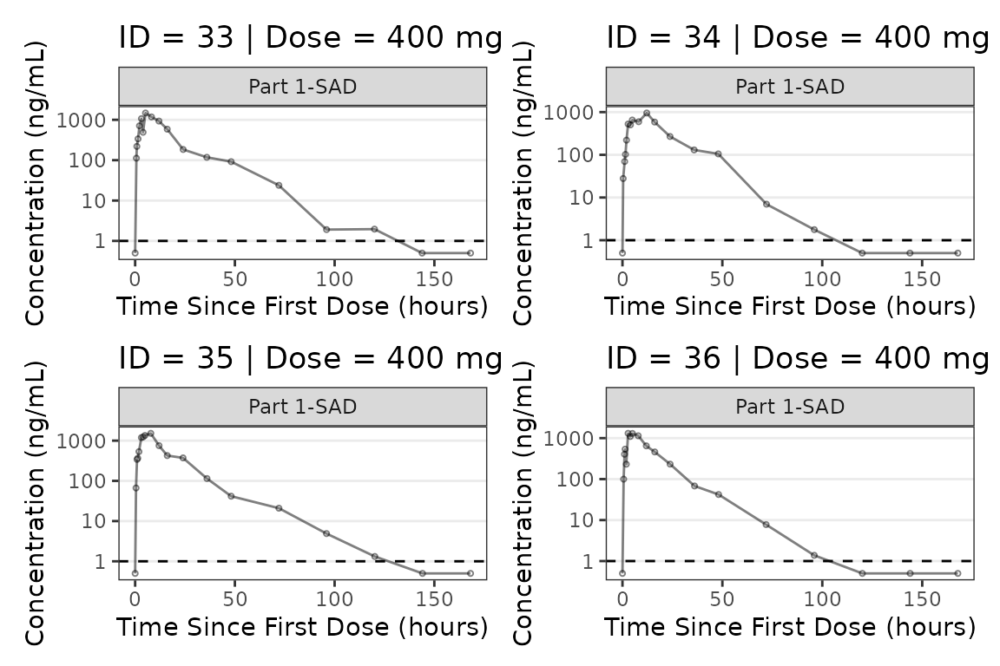
Population Response-time Plots with plot_dvtime()
Longitudinal pharmacodynamic response data can also be visualized
over time using plot_dvtime(). This function is designed to
visualize a dependent variable versus time and can be used for PK and/or
PD data!
plot_dvtime(data = plot_data_pd, dv_var = ODV, col_var = `Dose and Food`) +
labs(y = "Response (% of Baseline)", x = "Time Since First Dose (hours)")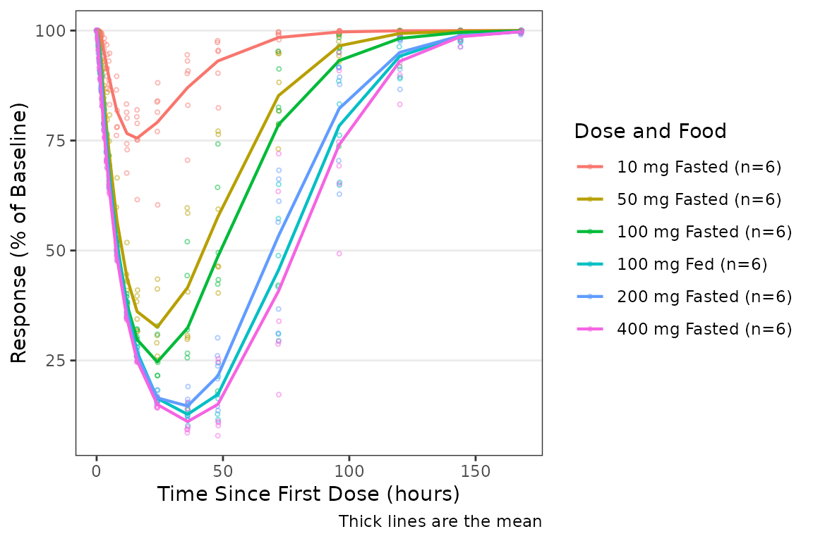
Specifying a Reference Value for Change Metrics
A horizontal reference line can be added by specifying the
ref argument with a numeric y-intercept value. For example,
ref = 100 adds a reference line at y = 100:
plot_dvtime(data = plot_data_pd, dv_var = ODV,col_var = `Dose and Food`,
ref = 100) +
labs(y = "Response (% of Baseline)", x = "Time Since First Dose (hours)")When the response variable is expressed as change from baseline,
ref = 0 provides the appropriate reference line:
plot_dvtime(data = plot_data_pd, dv_var = CFB,col_var = `Dose and Food`,
ref = 0) +
labs(y = "Response (% of Baseline)", x = "Time Since First Dose (hours)")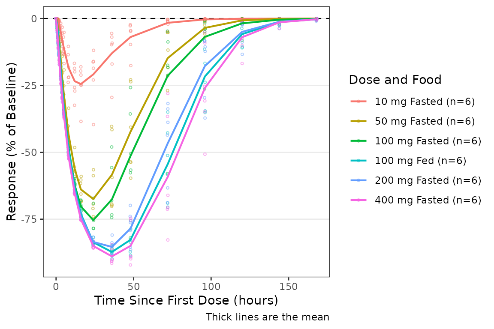
Combining PK and PD Panels
Simultaneous visualization of the time-course of drug concentration
and response can be achieved by combining two plot_dvtime()
calls with the patchwork package. This approach provides
full control over the content and aesthetics of each panel.
p_pk <- plot_dvtime(data = plot_data_pk, dv_var = ODV, col_var = `Dose and Food`,
log_y = TRUE) +
labs(x = "Time Since First Dose (hours)", y = "Concentration (ng/mL)")
p_pd <- plot_dvtime(data = plot_data_pd, dv_var = ODV, col_var = `Dose and Food`,
ref = 100) +
labs(x = "Time Since First Dose (hours)", y = "Response (% of Baseline)")
p_pk / p_pd + plot_layout(guides = "collect")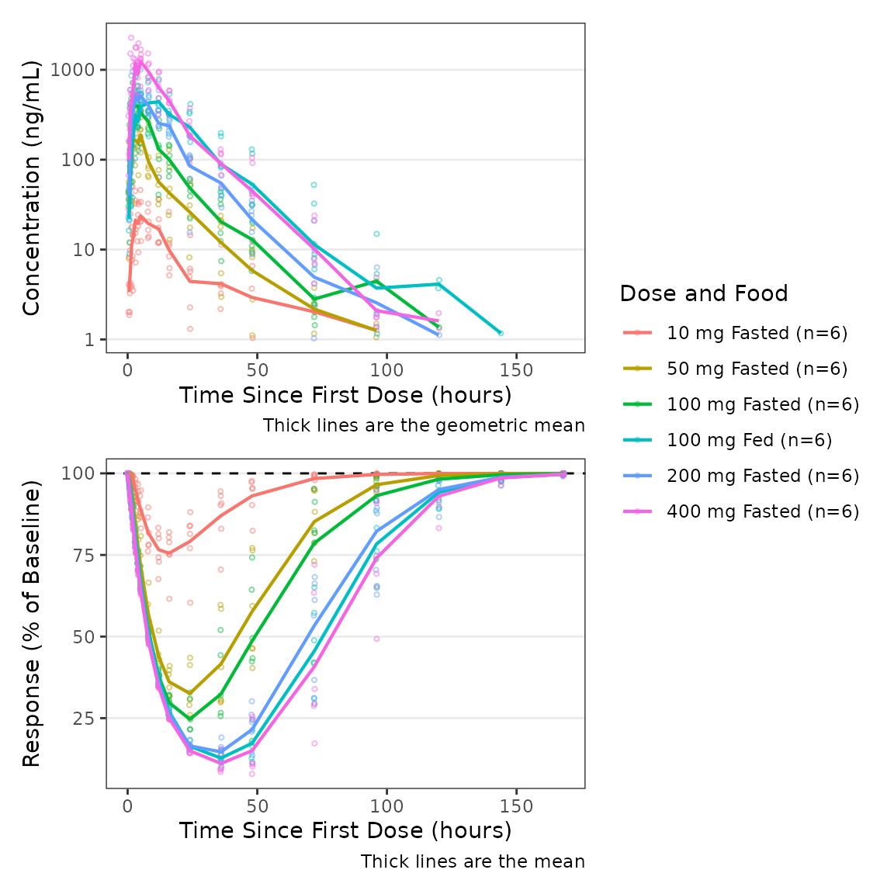
Each panel can be customized independently. For example, BLQ imputation can be applied to the PK panel while the PD panel uses change from baseline with its own central tendency specification with captions removed from both panels.
p_pk <- plot_dvtime(data = plot_data_pk, dv_var = ODV,col_var = Dose,
log_y = TRUE,loq_method = 2, show_caption = FALSE) +
labs(x = "Time Since First Dose (hours)", y = "Concentration (ng/mL)")
p_pd <- plot_dvtime(data = plot_data_pd, dv_var = CFB,
col_var = Dose, cent = "median", show_caption = FALSE) +
labs(x = "Time Since First Dose (hours)", y = "Response (% Change from Baseline)")
p_pk / p_pd + plot_layout(guides = "collect")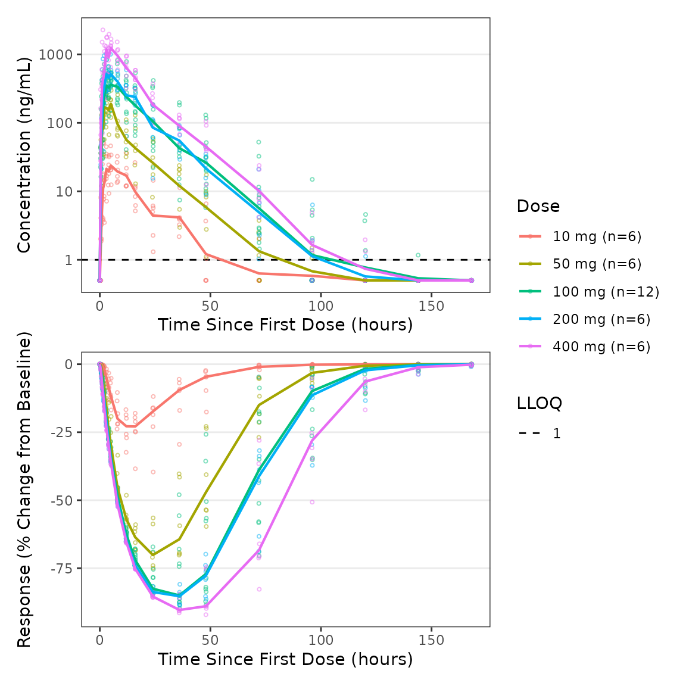
Population Response-Concentration Plots with
plot_dvconc()
Overview
plot_dvconc() is a plotting function intended to help
with visualization of the relationship between a dependent variable for
response and drug concentration.
Specifying Dependent and Independent Variables
plot_dvconc() has 2 arguments that specify the dependent
variable to be mapped to the y-axis dv_var and the
independent variable to be mapped to the x-axis (idv_var).
The defaults are as follows:
-
dv_var= DV, character string specifying the dependent variable to map to the y-axis. -
idv_var= CONC, character string specifying the independent variable to map to the x-axis.
Both arguments use non-standard evaluation and can be passed as bare column names or strings.
plot_dvconc(data = plot_data_pd, dv_var = ODV, idv_var = CONC) +
labs(x = "Drug Concentration (ng/mL)", y = "Response (% of Baseline)")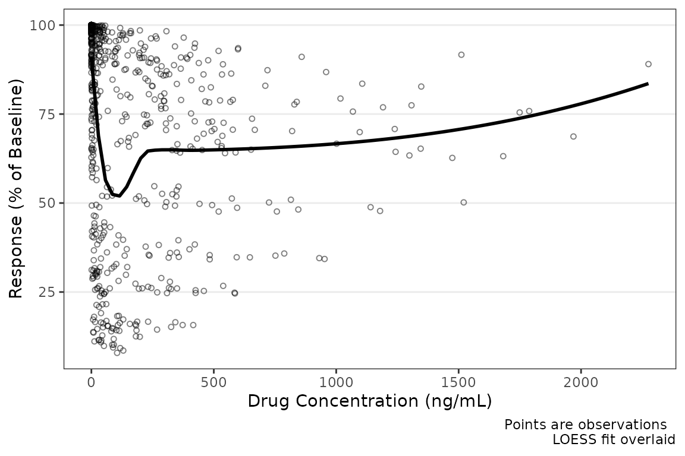
Specifying Change from Baseline
Like plot_dvtime(), we can add a horizontal reference
line by specifying ref with a numeric y-intercept.
plot_dvconc(data = plot_data_pd, dv_var = CFB, idv_var = CONC,
ref = 0) +
labs(x = "Drug Concentration (ng/mL)", y = "Response (% Change from Baseline)")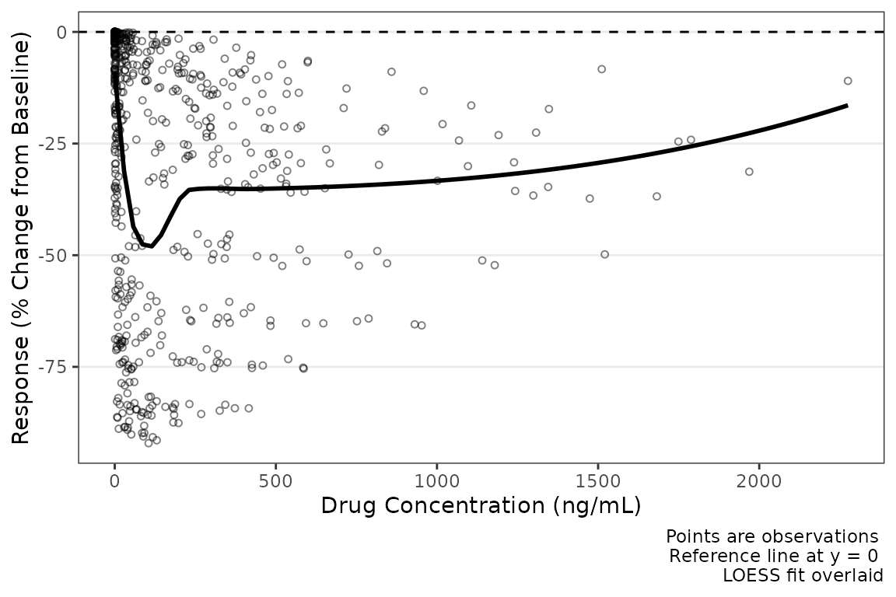
Specifying the Color Aesthetic
plot_dvconc() includes two arguments for controlling the
color aesthetic, col_var and col_trend. If a
variable is passed to the col_var argument, the data points
are colored based on this variable; however, by default
col_trend = FALSE and the trend line is fit to the totality
of the data without stratifying the trend lines by the variable mapped
to the color aesthetic.
The col_var argument uses non-standard evaluation and
can be passed as a bare column name or as a string.
plot_dvconc(data = plot_data_pd, dv_var = CFB, idv_var = CONC,
ref = 0,
col_var = `Dose and Food`, col_trend = FALSE) +
labs(x = "Drug Concentration (ng/mL)", y = "Response (% Change from Baseline)")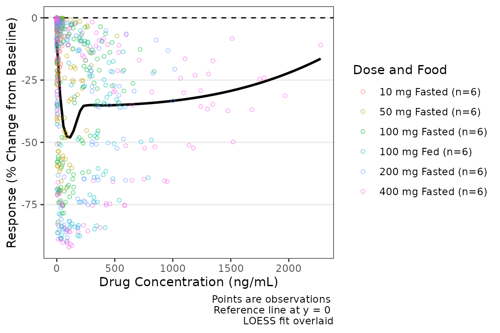
Trend lines stratified by the variable mapped to the color aesthetic
are requested by setting col_trend = TRUE.
plot_dvconc(data = plot_data_pd, dv_var = CFB, idv_var = CONC,ref = 0,
col_var = `Dose and Food`, col_trend = TRUE) +
labs(x = "Drug Concentration (ng/mL)", y = "Response (% Change from Baseline)")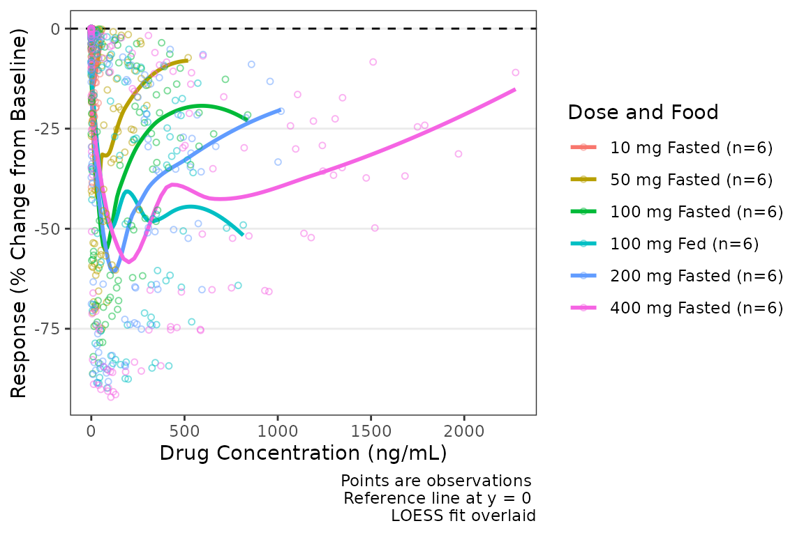
Specifying the Central Tendency
There are two trend line types supported by
plot_dvconc()
- locally estimated scatter plot smoothing (LOESS) fit
- linear regression.
The central tendency trend lines visualized are controlled by logical
arguments loess and linear. The default is
loess = TRUE and linear = FALSE
plot_dvconc(data = plot_data_pd, dv_var = CFB, idv_var = CONC, ref = 0,
col_var = `Dose and Food`, col_trend = FALSE, loess = TRUE, linear = TRUE) +
labs(x = "Drug Concentration (ng/mL)", y = "Response (% Change from Baseline)")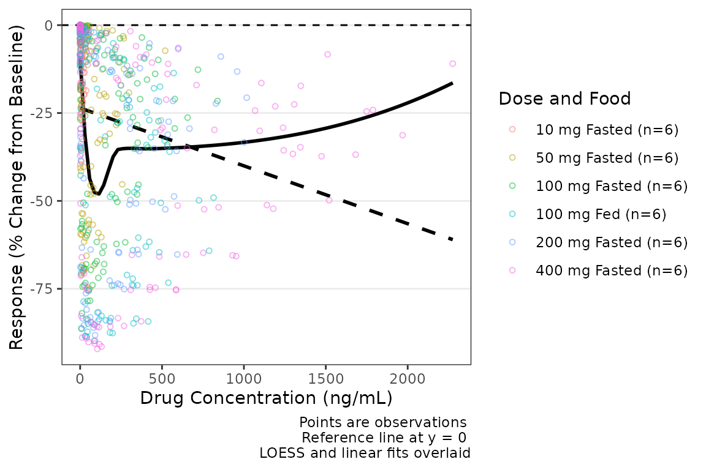
The confidence intervals of the trend lines are suppressed by default
in order to facilitate visualization of the central tendency and spread
of observed data points simultaneously. Confidence intervals can be
added to the plot using the logical arguments se_loess and
se_linear.
plot_dvconc(data = plot_data_pd, dv_var = CFB, idv_var = CONC,ref = 0,
col_var = `Dose and Food`, col_trend = FALSE,
loess = FALSE, linear = TRUE, se_loess = FALSE, se_linear = TRUE) +
labs(x = "Drug Concentration (ng/mL)", y = "Response (% Change from Baseline)")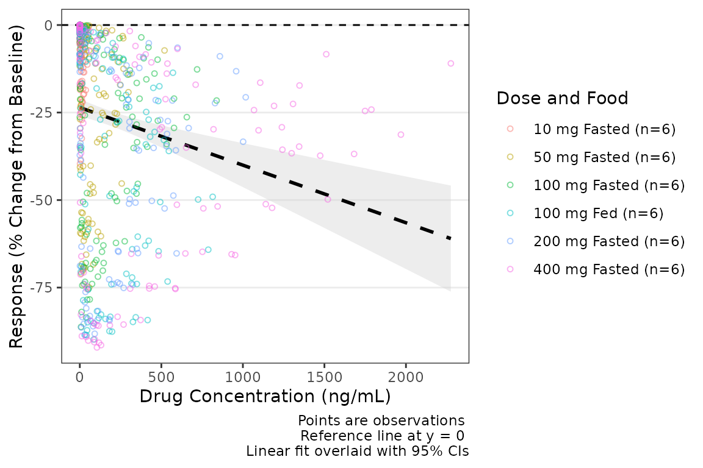
Additional arguments can be passed to
geom_smooth(method = "loess"), such as increasing the span
of the smoothing fit.
plot_dvconc(data = plot_data_pd, dv_var = CFB, idv_var = CONC,ref = 0,
col_var = `Dose and Food`, col_trend = FALSE,
loess = TRUE, linear = FALSE, se_loess = TRUE, se_linear = FALSE,
span = 1) +
labs(x = "Drug Concentration (ng/mL)", y = "Response (% Change from Baseline)")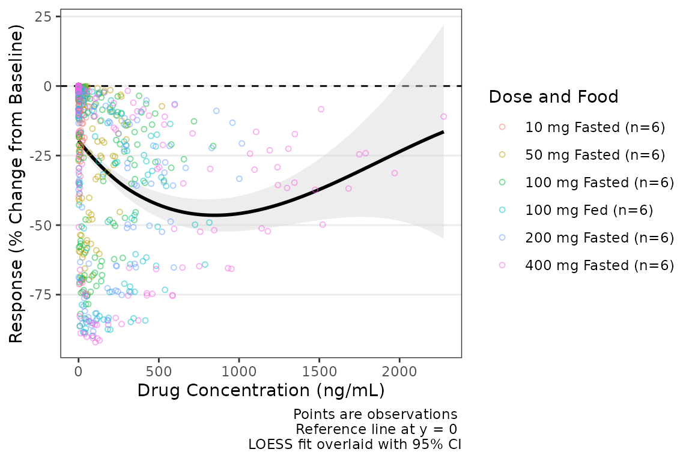
If the color aesthetic is mapped to the trendlines withcol_trend = TRUE, it will also map to the ribbons defining
the CIs of the trend lines.
plot_dvconc(data = plot_data_pd, dv_var = CFB, idv_var = CONC,ref = 0,
col_var = `Dose and Food`, col_trend = TRUE,se_loess = TRUE) +
labs(x = "Drug Concentration (ng/mL)", y = "Response (% Change from Baseline)")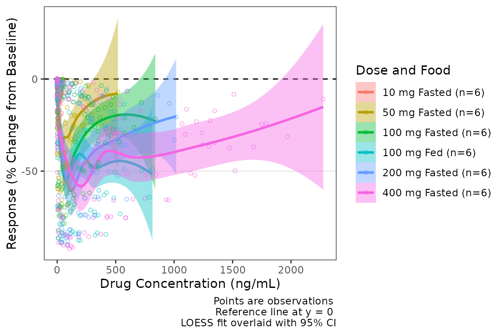
Adjusting the Plot Theme with plot_dvconc_theme()
The default aesthetics for Response-Concentration plots are
controlled via plot_dvconc_theme(). See the Plot Themes and Aesthetics vignette for
details on the theme system, element constructors, and examples of
customizing Response-Concentration aesthetics.
plot_dvconc_theme()
#> <plot_dvconc_theme>
#> obs_point <pmx_point>: shape = 1, size = 1.25, alpha = 0.5
#> ref_line <pmx_line>: linewidth = 0.5, linetype = 2, alpha = 1
#> loess <pmx_trend>: linewidth = 1, linetype = 1, color = black, se_color = lightgrey, se_alpha = 0.4
#> linear <pmx_trend>: linewidth = 1, linetype = 2, color = black, se_color = lightgrey, se_alpha = 0.4Say we want to update the color of the trend line and standard error.
This can be done by defining a new theme and passing that to the
theme argument of plot_dvconc().
dvconc_new_theme <- plot_dvconc_theme(
loess = pmx_trend(color = "darkred", se_color = "darkred")
)
plot_dvconc(data = plot_data_pd, dv_var = CFB, idv_var = CONC,ref = 0,
loess = TRUE, linear = FALSE, se_loess = TRUE, se_linear = FALSE,
theme = dvconc_new_theme) +
labs(x = "Drug Concentration (ng/mL)", y = "Response (% Change from Baseline)")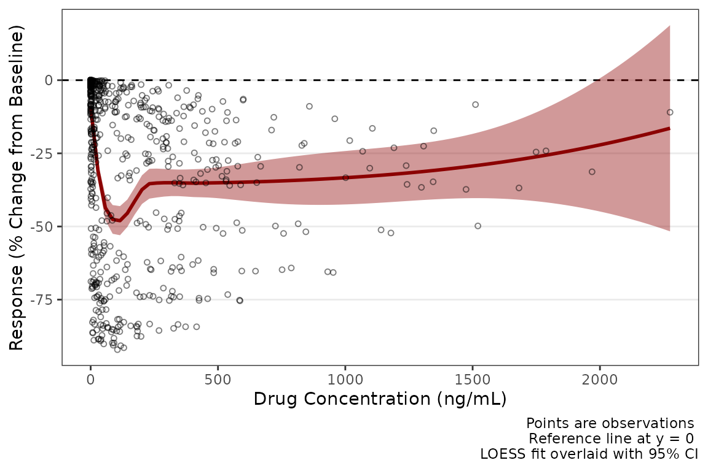
See also
- Dose-proportionality Assessment workflow — statistical assessment of dose-proportionality of exposure using power law (log-log) regression
- Plot Themes and Aesthetics — element constructors, theme factories, and class system for customizing plot output.